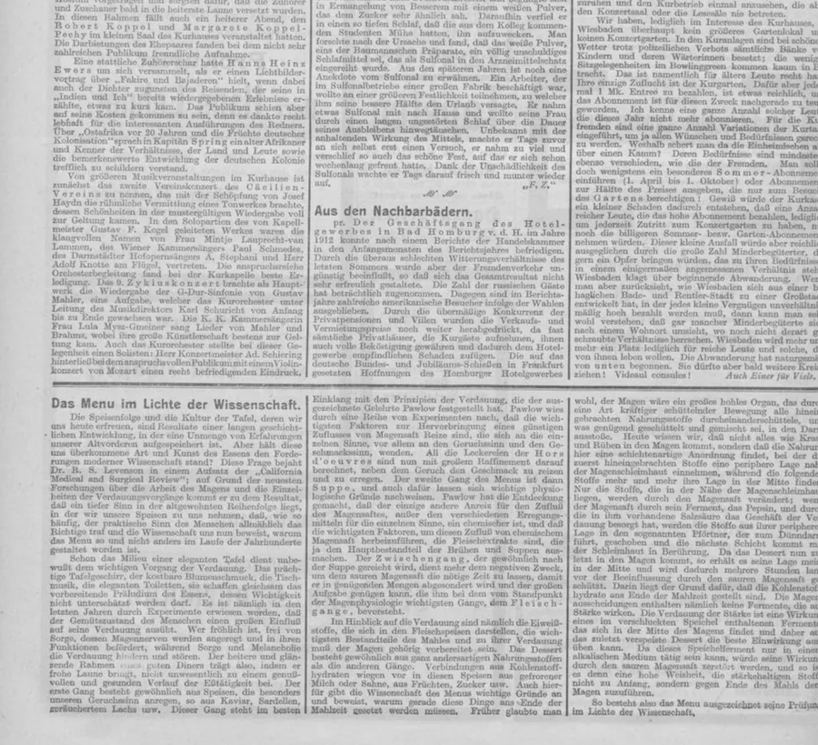

Historical material
Documents.
Examples of original historical records consulted during research. These images do not identify prospective heirs or set out a private client's case.




Historical material
Examples of original historical records consulted during research. These images do not identify prospective heirs or set out a private client's case.
